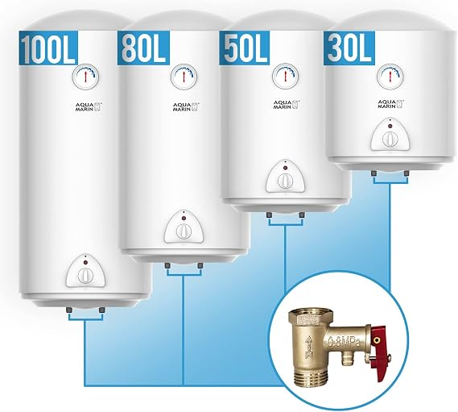
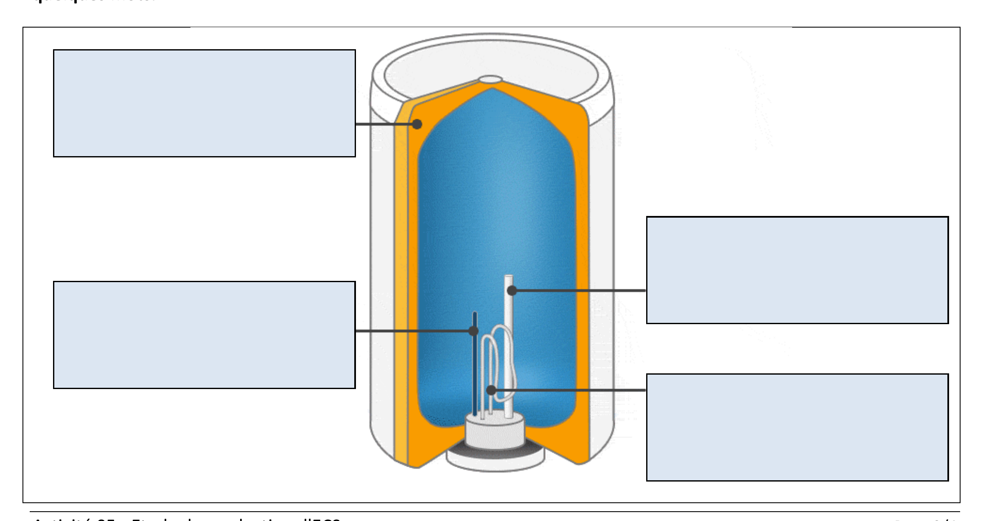
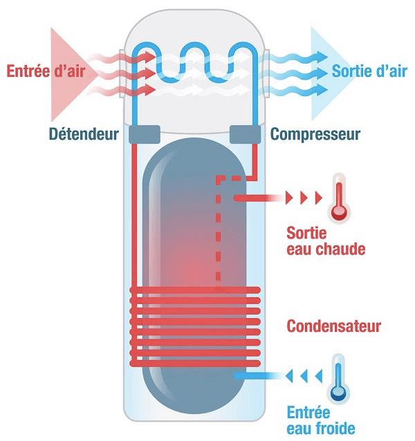

05 Séquence A · Activité 05
Étude de production d’eau chaude sanitaire (ECS)
Étudier les chauffe-eau puis dimensionner celui de votre logement.
Étudier les chauffe-eau puis dimensionner celui de votre logement.

O1 – Caractériser des produits ou des constituants privilégiant un usage raisonné du point de vue développement durable.
CO1.1. Justifier les choix des structures matérielles et/ou logicielles d’un produit, identifier les flux mis en œuvre dans une approche de développement durable.
O3 - Analyser l’organisation fonctionnelle et structurelle d’un produit.
CO3.1. Identifier et caractériser les fonctions et les constituants d’un produit ainsi que ses entrées/sorties
Vous avez dû récupérer un grand nombre d’informations sur votre logement (voir activités précédentes).
Vous désirez modifier votre installation d’ECS pour chauffer l’eau avec un chauffe-eau thermodynamique.
Étudier les chauffe-eau et ensuite faire une étude avec votre logement. À la fin de séance vous devrez fournir :
Commencez par regarder la vidéo et répondez aux questions suivantes dans les cases bleues. Vous pouvez soit regarder le fichier « Choisir un chauffe-eau électrique », soit la regarder sur YouTube (où vous pourrez mettre des sous-titres).
Dans les cases de schéma ci-dessous, rajoutez les termes « Mousse isolante », « Thermostat », « Anode sacrificielle en magnésium » et « Résistance blindée ». Expliquez à quoi servent ces différents éléments en quelques mots.

À l’aide du schéma ci-dessous, expliquez comment fonctionne un chauffe-eau thermodynamique. Utilisez les termes « calories », « fluide frigorigène » et « pompe à chaleur » dans votre explication.

Nous allons dimensionner le chauffe-eau de votre logement. Pour les besoins journaliers en eau chaude, nous considérerons les données de l’ADEME soit 35 ± 14 litres à 55°C par personne.
Ce site a été réalisé par Abdellah CHELOUAH.